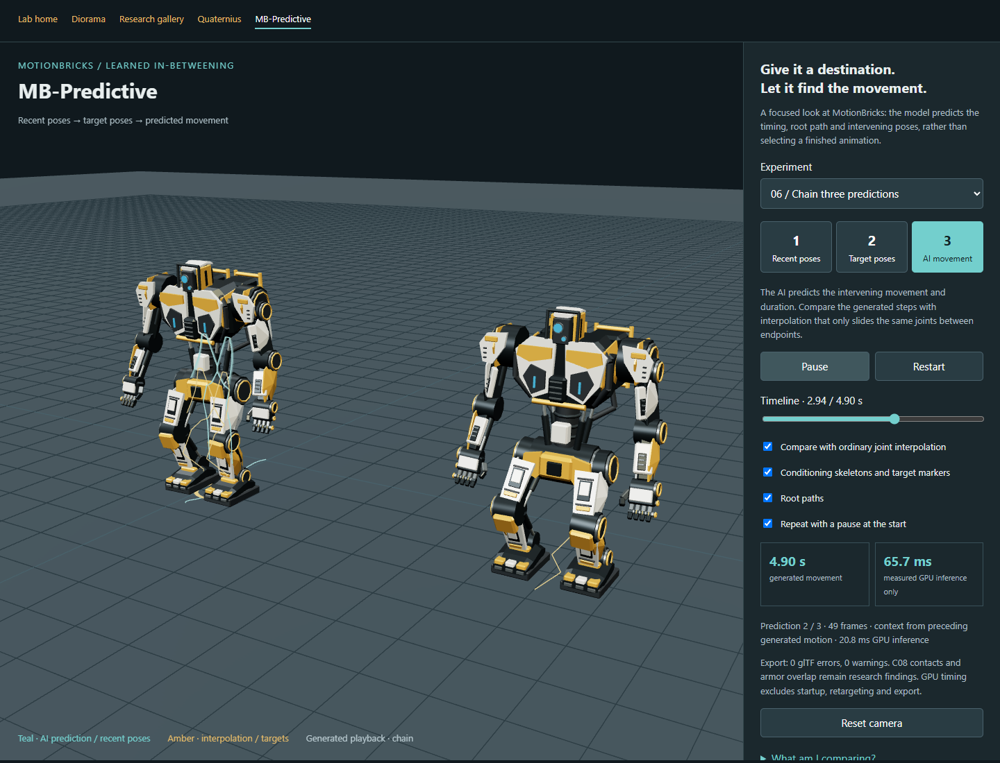
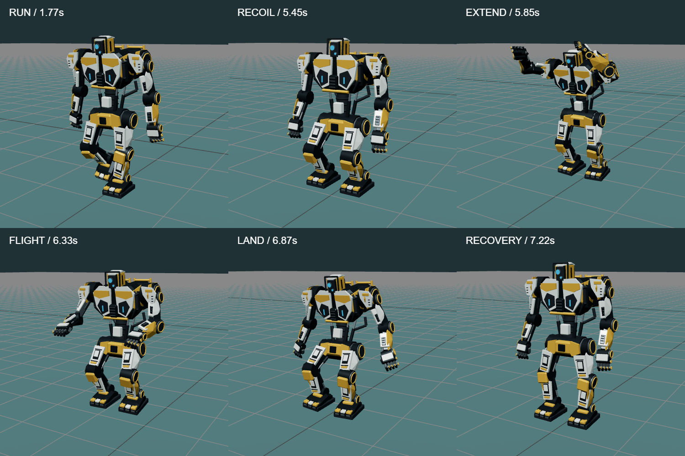

The creator reviewed all 13 previous H3 comparisons: five looked good, seven failed, and the estimated-camera-locked K0 pounce was promising but unnatural. The original verdicts and recipe versions are preserved separately from browser scores. Looking good is not final game acceptance. The controls and source videos differ, so this small round does not establish a general biped advantage over quadrupeds.
The next Biped capture gallery contains 24 actual supplied GLB comparisons: ukemi, technical stand-up, front-facing gorilla exercise, sumo stomp, BJJ floor flow into a shoulder roll, and an H3 stylized gorilla dance. Each is adapted to C08, B-REK43, EVA-K7 and the experimental Meshy fighter. All four retain their original rig and geometry; the Meshy fighter remains attributed to Tulio Portela under CC BY 4.0 and excluded from the production pipeline.
What changed in the pipeline
We verified source hashes and reused four existing GEM-X recoveries. Only the floor-flow and H3 dance needed new GPU recovery. The model estimates native SOMA77 motion; its exact transforms are then adapted directly to the four original biped rigs in Blender. This round has no G1 intermediate and no MotionBricks inference. It tests recovery and body adaptation, rather than learned in-betweening. There is no new Video2Rig reader training in this round.
The synchronized gallery preserves clip timing and allows camera orbit, slow motion, root-follow toggling and body visibility. A separate raw recovered skeleton view retains the source estimate before robot adaptation, with only a constant display translation. This helps distinguish recovery errors from retargeting errors. All six reference videos and their source frames remain local; public pages contain derived motion and reports.
Limits that need visual review
The front-facing gorilla reference has a heavily cropped ending: 55 of 239 recovered frames project at least five major joints outside the image, and 25 frames have missing or filled person detections. These are coverage warnings, not accuracy scores. No tail is silently trimmed. Hand-supported floor transitions and rolls remain particularly difficult: monocular depth, hidden legs, self-collision and real support cannot be established by a valid file.
The adapter translates the whole target vertically at each key so its lowest skinned vertex clears the floor by 15 mm. That is explicitly a presentation correction, not a contact or balance solve. It changes vertical root motion and may introduce bobbing; per-body offsets are reported. The raw skeleton is available without this correction. Source hand detail is not reproduced; fingers use the original rig rest pose. The unusual anatomy and generated imagery in the H3 gorilla dance are an out-of-distribution stress test for human recovery.
Review each body separately for support changes, shoulder roll direction, arm placement, knee behavior, floor contact and weight transfer. Save comments and scores in the browser, then export all reviews in one file. That export also attaches the previous 13 reported verdicts as separate metadata; it does not fabricate numerical scores. A kept clip still needs root-motion extraction, transition testing and an actual game import.
The new H3 / Video2Rig gallery separates reference imagery, known-motion controls, actual recovered rigs and processing comparisons. These outputs use Video2Rig or GEM-X, with no MotionBricks inference. A completed job means its artifacts are available for review; it does not mean good animation.
What we actually ran
The creator supplied a 12.25-second concept-biped walk/run/stop clip, a 12.25-second K0 pounce and a 6.58-second C07 jump, all at 24 fps. Video2Rig is pinned to 55d51b3b9685125a8ea27841d6af9523f6352aa1 in a separate G-drive environment. It learns joints from synthetic renders of a specific rig, then fits that rig to video readings. Our Blender 4.5.15 workflow runs without modifying upstream code; its external weights and trained readers stay private. No new paid generation service was activated.
We began with known-camera renders of our own native pounces. K0 used 3,000 random training poses, a 9,000-step full training stage after short preflights, and about 20 minutes for that stage. Synthetic held-out median error was 5.25 pixels front / 4.29 side. The independent recovered-motion result is more useful: across the 50 visible body-chain joints, mean world-position error was 11.2 mm and p95 was 26.1 mm at all 120 known timestamps. Local rotation median was 3.92°. C07's bounded transfer trial measured 26.7 mm mean / 79.7 mm p95. These are different-sized bodies and experiments, not a normalized cross-character ranking.
The original invisible MOTION transport node is reorganized: fitted LUMBAR absorbs its displacement. Reports retain both all-51-node and visible-50-chain statistics. A game must deliberately map or extract the fitted root. Native shoulder translations also exceed the rotation-only fitter's contract; an independent oracle records that representation floor before judging recovery. Valid exports do not make the controller or contacts production-ready.
The useful failures
A reader trained on wide native cameras was a poor fit for the close H3 view: reading confidence fell from 0.96 on the native control to 0.48 on H3. A separate camera-specific synthetic fine-tune raised it to 0.80. This is a reading-confidence change, not 3D accuracy against unknown ground truth.
Automatic camera alignment was another major issue. It applied approximately 2.44× scale plus offset/rotation to an estimated view whose starting body bounding box already roughly matched the video. We preserved that result and locked the estimated camera in a new fit using identical readings, masks and timing. This camera is still an estimate, not the original generation camera.
Same K0 H3 video
Opening 1 s median lowest-skin height
Largest adjacent quaternion step
Reused wide-camera reader / auto alignment
76.2 mm
178.7°
Camera-specific reader / auto alignment
56.2 mm
83.1°
Camera-specific reader / locked estimate
6.6 mm
96.3°
The reference is visibly standing during that opening interval. Heights are independent mesh diagnostics, not labeled contact or balance truth. Locking the estimate improves stance and gross posture, but the tail still has severe rotation spikes. The full locked clip reaches about 12 mm below the floor at some sampled poses. It remains a rework candidate. Controlled measurements and same-camera visual comparison.
Turning off root-from-steps and foot locking produced numerically identical K0 motion arrays: neither heuristic changed this clip. Stronger smoothing also retained a near-180° tail step. Switches and lower noise statistics cannot substitute for visual inspection. The available published C07 body differs substantially from its H3 starting silhouette, so its H3 fits are approximate-body negative controls, separate from its valid native-render control.
The concept-biped stress test used our existing human-oriented GEM-X estimator. It produced 368 SOMA poses at 30 Hz and an inspectable 3D skeleton, but the raw estimated root has a 5.88 m horizontal end-to-start gap despite the video's return toward its initial stance. The existing C08 adapter also needed up to 0.52 m whole-body grounding correction and has a small between-key floor penetration. This is an informative route through the complete pipeline, not a seamless accepted game loop.
Make the next inputs measurable
The new five-body reference pack provides 20 exact Blender starting frames and 20 companion TXT prompt menus. C08, B-REK43, EVA-K7, K0-Tech and C07 each have three-quarter, side, matched front/side and wide forward-action views. Packed Blender scenes, frozen idle poses, original asset hashes and camera manifests accompany them. Official Video2Rig camera parsing agrees with saved joint projections within 0.00088 pixels. Prompts request one action per clip and preserve camera, identity and framing; H3 compliance still needs checking.
The promising path is exact-character video recovery with explicit cameras and human cleanup. The dead end is treating arbitrary stylized imagery, a successful export or a confidence score as proof of faithful animation. Tail motion, hidden-limb depth, skin/floor contact, loop boundaries and dynamic weight remain open. This branch broadens quadruped experiments; it does not turn MotionBricks' humanoid models into quadruped models.
The handoff proposed an offline route from MotionBricks to an original humanoid robot and then to self-contained game animation files. We provisioned the existing Windows machine and used the creator’s C08 Industrial Worker. The first walk worked. Its swagger made the next question worthwhile: could this become a controllable, useful motion workflow?
The scope widened through review. K0-Tech suggested interactions; exercise videos suggested recovery; inconsistent results suggested a conventional baseline; sparse poses suggested new approaches and transitions. Each approach became a separate tab. Earlier experiments remain available for comparison.
A valid file, a clear obstacle, a stable support foot and a convincing sense of weight answer different questions. This log separates engineering evidence, reviewer observations and proposed work. Consuming-game acceptance remains unfinished.
Permitted source / authored poses → generation or recovery → body adaptation → contact / cleanup → review → baked game clip
The current recorded motion round is release b5542f3, catalog reactive-round4-motion-quality. This page describes the review state on 29 October 2026.
Generation runs locally. GitHub Pages serves recorded assets and browser tools. Exported GLBs contain meshes, skeletons and animation; a consuming game does not need the local inference stack.
MotionBricks-G1-RP-v1 FP32. All generated robot experiments here use G1. Available SOMA weights do not establish that a G1/SOMA model comparison was run.
Locked environment, bundled ONNX models, cached TensorRT engines and reference kinematics. The main environment does not need a PyTorch or ONNX Python package for this engine path.
Vendored runtime, GLB/JSON/CSV, gzip display previews and separate exact native archives. Setup tools observed: Git 2.53.0, uv 0.12.6.
The host was a Windows 11 VM with an RTX 4090 exposing 24 GiB VRAM, 96 GiB RAM and 16 logical processors. G: initially had about 616 GiB free; the 29 October survey recorded about 574 GiB available. These describe our machine, not minimum requirements. First engine builds and caches matter; the project keeps its tools/caches on the workspace drive.
The small initial G1 smoke retained 116 frames, about 3.83 seconds of motion. Initialization took approximately 58.9 seconds; warmed calls took about 23–26 ms. Those call times exclude Blender/export/validation and initialization. Peak G1 generation VRAM was not measured, so this is not a hardware minimum or a cross-tool benchmark.
G1’s floating root and 29 hinge coordinates form a model contract. A robot’s anatomical rig and a game’s skeleton are separate contracts. Newton supplies kinematics/reference calculations here; it is not a calibrated physical simulation of the avatar’s masses or active balance.
G1 motion was adapted to a heavier mechanical body with different proportions. Fixed segment lengths, correct joint order, floor bounds, independent skeletons and exported joint correspondence established an initial technical baseline. A walk’s personality did not establish that this adapter would generalize to rolls or deep floor work.
The wider gallery used original numerical conditioning poses and retained review findings. A pose-authoring proxy exposed the floating pelvis and 29 hinge controls. A G1 conditioning pose is a numeric skeletal state on the supported model rig, not a photograph of the finished robot.
Hands exposed a separate failure. Valid arm rotations did not make C08’s wrist, palm, thumb and fingers read naturally. We authored a relaxed hand cup: fingers bend toward the palmar side, away from dorsal armor, and thumbs oppose inward. Direction and segment-length checks support that change. It is a resting hand pose, not object-specific grasping or generated finger articulation. Other bodies retain their own authored gloves/hands.
Gallery flags preserve findings such as uncertain contacts, joint limits and large adaptation corrections. They are inspection prompts. A clip without a flag can still have poor weight, timing or support.
GEM-X estimated native SOMA motion from the creator’s exercise footage; a direct adapter transferred it to C08. Ukemi, side/front gorilla exercise, technical stand-up, sumo stomp and deadlift are recovery/retarget experiments. MotionBricks did not generate those direct clips.
The first ukemi test produced 143 frames and 77 SOMA joints at 30 Hz, with 52.82 seconds inference and about 3.42 GiB peak PyTorch CUDA allocation. Inversion was inspected. Occluded limbs and a cropped ending remain missing evidence: this is estimated performance, not ground-truth mocap.
Floor work broke standing-oriented assumptions. Direct video adaptation required whole-avatar lifts up to about 0.80 m in the front-gorilla example. A later harvested/generated ukemi needed about 0.642 m lift after armor initially buried into the floor. Such lifts prevent penetration while changing support relationships. They do not reconstruct missing hands or establish balance. Deadlift has no recovered bar/load/grip physics.
Off Shift adds authored paths, playback rates, blends and staged interactions. K0-Tech uses its original feline clips; the later gallop follows ground distance to reduce speed mismatch. This is authored quadruped motion, not a quadruped MotionBricks policy. Recovery, generation, adaptation and choreography remain identifiable layers.
A consistent baseline and the neutral-stance question
Twenty Quaternius CC0 clips supplied a coordinated baseline. Source-mannequin comparison, locomotion phase alignment and explicit jump/sit sequences helped separate generation problems from retargeting and controller problems.
The first 30 Hz bake allowed fast armor penetration between keys. Baking at 120 Hz and checking skinned floor bounds improved export fidelity. Whole-avatar grounding during crossfades adds a guard; it does not establish planted contacts or seat/hand support.
We examined whether every motion should return to one default stance. Neutral recovery is useful in a random demonstration, so Random + idle uses explicit idle gaps. It is not a universal locomotion rule. Run-to-jump should retain momentum; walking transitions benefit from cycle phase; sitting ends seated and lying ends on the floor. Forcing standing idle into all of these would erase useful state.
Action-specific entry, sustained state and exit is the more useful organization. The random mode demonstrates sequencing. The basic WASD/Shift/jump controller is a conventional playback controller, with no MotionBricks inference claim.
MB-Predictive focuses on MotionBricks’ distinguishing capability: four recent poses and one to four target poses condition a continuation. We can place an arrival posture at a different destination/heading and inspect the movement and timing the model supplies.
The first six tests used original G1 inputs: near/far arrivals, a new heading, crouched/reaching arrivals and a chain. A non-neural control interpolates the same endpoints over the model’s selected duration. It exposes learned stepping versus endpoint interpolation; it is not a quality benchmark against a fully authored controller, and the branches’ contact processing also matters.
Pose harvesting then sampled context, midpoint and endpoint from five Quaternius clips, six own capture recoveries and four originally conditioned model outputs. Human poses were fitted to bounded G1 coordinates with errors recorded. Source timestamps identify sampled postures; they do not impose the original exercise or timing on the prediction. Three combined sequences brought the public presets to 24.
A genuine chain uses the last four poses actually played as the next context. Discarded futures cannot silently become context. This matters once a collision controller edits the root or a recorded action sits between neural segments.

Recorded predictive-chain study. Fresh generation is separately available through a loopback-only local GPU service. Public Random/Continuous modes play recordings.
The promise is controlled approaches, departures and variations around meaningful poses. Sparse targets do not guarantee faithful ukemi reconstruction, correct support, obstacle awareness or physical balance.
Vanilla 15 is a curated practical starting set, not a statistical usage ranking. Its locomotion, jumps, crouch, floor and seated actions use Quaternius inputs with explicit composition recipes. The backward roll reverses a forward roll; get-up reverses a fall. These prototypes remain identified.
Review found run/running-jump vibration, a running jump that looked like a drop, a shaky backward roll and stool clipping. Filtering/timing, authored forward travel and the configured seat arrangement improved those particular candidates. The measured seated support gap is about 12 mm. This does not solve arbitrary furniture, and a Vanilla filter result does not prove that Reactive running arms are smooth.
Feedback storage also failed visibly: filtering by version/reviewer could show zero reviewed while comments/scores existed. The shared store now migrates old records, uses a stable browser identity through name edits, shows earlier versions, and counts scores/comments without requiring a Keep decision. One export contains all saved collections, bodies, versions, comments and scores. Import validates before mutation and retains conflicting history.
Fifteen root-motion and fifteen in-place GLBs were baked from the actual composed display. Reloaded bone/vertex parity became the acceptance check. Export hierarchy, identity skin nodes, normalized rotations and baked ground/root offsets matter; a viewer that looks fine can still hide a skinning warning or a displaced export.
Keep belongs to a body and version. Historical recommendations retain mismatch warnings and pinned source downloads, separate from current previews. Browser storage is origin-local, so export remains the backup/transfer route. A Keep is a reviewer recommendation, not automatic game acceptance.
We introduced pillars, speed sections and a moving K0-Tech target. The application chooses a target posture/placement; MotionBricks sees recent/target poses rather than scene geometry. External planning and swept collision response handle the route.
Matched scenario/seed pairs compare direct goals with waypoints, abrupt with acceleration-limited commands, current with predicted cat targets, and combined tasks. Played native G1 motion, selected pre-response poses and unused neural futures remain distinct. Following inference receives the actual played native poses after external response.
Short scenes made pursuit hard to judge. Expanded round 2 added 24-second slalom and 40-second running/pursuit in a 36 × 14 native-metre arena. Actor/cat follow keeps motion readable; overview exposes route choice. Character/environment dimensions adapt to leg lengths.
The cat is a seeded target fixture with authored motion. Actor/cat mutual contact avoidance remains open. This is a reaction experiment rather than a complete multi-body physics policy.
A small circular navigation proxy did not cover C08’s broad armor. Root/cat sweeps could pass while arms or shoulders intersected pillars. The retained 0.65 m-radius negative control records up to about 0.239 m triangle penetration.
We enlarged the native envelope to 1.05 m and changed pillar spacing, decorative placement, cat start and pursuit standoff. Several variables changed: this is calibration, not an isolated radius-only ablation. Independent articulated-geometry checks became part of the acceptance gate.
Height-aware obstacles were also necessary. A successful jump overlaps a hurdle’s footprint while passing above; a crouch overlaps a bar’s footprint while passing below. Treating both as ordinary vertical cylinders misclassifies the task. Body-specific overhead calibration follows actual proportions.
Validate what the reviewer sees. Root clearance, bone bounds, mesh/obstacle checks and perceived weight contribute different evidence. Even final sampled triangle checks leave self-collision, dynamic balance and new trajectories open.
Half-second replanning helped steering but could repeatedly truncate a jump before its apex. A final stance, or evenly spaced targets without event meaning, did not adequately express run-up, recoil, extension, flight, landing and recovery. Longer action segments gave a prediction the opportunity to finish.
They did not make deep crouch locomotion reliable. Some neural pilots rose too tall beneath a bar or moved with a shallow, sliding shuffle. Retargeted armor could fail clearance even when a native proxy looked plausible. Failed C08/B-REK pilots remain in the record.
Stale or unsuitable foot locking could preserve a bad relationship to the scene. Predicted contacts are not ground truth for every frame. Raising the whole body prevents penetration while potentially worsening support. A deeper target does not establish a balanced crouch.
The next round therefore narrowed its claim: prepare permitted actions where needed, generate entry/exit around them, and classify each segment. Pure neural action quality remains a separate research avenue.
The catalog now has 123 takes: six paired scenarios across ten seeds, plus three 80-second continuous courses. C08, B-REK43 and EVA-K7 share native motion adapted to their own proportions. Sixty navigation takes were retained; 63 were revised or added. The record distinguishes 8,340 neural requests from 4,879 prepared-source playback frames: 100 takes are neural-only, 23 are hybrid.
Crouch uses a Quaternius CC0 root-motion source fitted to G1 and contact-prepared with explicit support/swing phases and bounded IK. Jump uses an originally conditioned own-jump trajectory, phase retiming and adjusted horizontal travel, retaining its recorded vertical samples. Neural entry/exit connects prepared actions. Source license/hash, segment mode, played context and per-frame phase names remain inspectable.
Orange/red sections request 2.4/3.3 native m/s. Across twenty revised speed takes, orange means are about 1.94–2.29 m/s; red means about 2.83–2.93 m/s. The UI separates request from observed travel. Older mixed tests include slowing down and retain neutral floor colors instead of implying this newer progressive scheme.
Each hero course is one continuous recorded timeline whose played poses feed later requests. The separate section playlist reloads independent takes with an explicit reset boundary; it does not transfer neural context or world position. The two continuity modes remain clearly identified.

Recorded phases in the hybrid jump study. The poses show the intended event sequence; they do not establish physical balance or all-neural action generation.
EVA keeps its original 50 animated controls, 12 fixed sockets, authored gloves and source clips. Each body has its own scale and calibrated overhead height. Its corrected displayed animation can be baked with body ID and provenance.
Open visual reviewReactive Targets is promising. The reviewer still finds the crouch’s centre of gravity wrong and running arms insufficiently smooth. Those findings remain active after the contact work.
Stable native G1 support did not ensure stable feet after body transfer. In the selected C08 comparison, prepared stance median sole speed fell from about 0.178 m/s to 0.0000068 m/s. B-REK/EVA use explicitly enabled per-body footplanting. These measurements concern marked trusted support intervals, not every neural step.
A world-space bug then escaped an origin-only probe. Rig-local anchors could become unreachable in translated viewer lanes, causing release/sliding. Anchors and flat-foot rotations now pass through the group’s full world transform. Translated/yaw-rotated parents, arbitrary scrubbing, fresh instances and game bakes were checked. The recorded deterministic pose error was zero; exported/displayed vertex differences stayed below half a micrometre.
This repairs a fault and improves support. It does not establish believable balance. No avatar segment masses/inertias are calibrated; no centre-of-mass trajectory or active balance controller has been measured. A stationary foot can coexist with an implausible pelvis/torso trajectory.
Proportions, source style, adaptation, external root corrections and hand/foot constraints are possible contributors to the weight problem. Their separate contributions have not been isolated. A useful next study compares source/avatars, pelvis/torso/foot paths and visual scores, with clearly stated assumptions for any approximate mass/support diagnostic. Footplant metrics cannot close this review item.
Running arms: a diagnostic and an unapproved cleanup candidate
MeasuredWe sampled local bone rotations at 30/60 Hz, separating moving samples near neural segment joins from those inside segments. Rapid changes occur in both. For example, selected upper-arm/forearm within-segment acceleration percentiles exceed the corresponding join values. The perceived jitter cannot simply be attributed to stitching seams.
These are discrete quaternion-animation derivatives, affected by track interpolation, key spacing and sampling rate. They are not physical accelerometer data or a perceptual score. A Quaternius CC0 sprint has lower upper-arm but higher forearm derivatives under the same calculation; that does not support a global smoothness ranking across rigs/styles/speeds.
Visual review candidateA separate 40 ms Gaussian upper-body-rotation filter reduces selected moving acceleration p95 values from roughly 106–129 to 42–55 rad/s². Root, leg and position accessors remain byte-identical, and native contacts are unchanged. The new GLB passes structural validation. It is postprocessing, not new neural output or a balance correction; all 123 published takes remain unchanged.
The comparison starts at 8 seconds, shares time and supports slow playback. Judge coordination, purposeful arm swing and hand placement as well as visible jitter. Open the comparison separately.
Download the proposed upper-body cleanup GLB. Compare it against the original before accepting it. Further A/B work could compare raw arms, this filter and phase-matched authored/CC0 arms while holding root, legs, contacts, speed and camera constant.
Blender’s Gaussian/Butterworth curve tools are other available cleanup methods. Peak loss, ringing, action timing and coordination need inspection. The earlier Vanilla all-curve filter is a different experiment. A matched SOMA-versus-G1 locomotion study is also proposed; available SOMA model files do not mean that comparison has been performed.
Natural performance, game controller quality, consuming-engine acceptance.
Native navigation
Swept root/cat proxies, recorded external response, following context drawn from played poses.
Articulated continuous dynamics, learned scene perception, actor/cat mutual contact.
Mesh clearance
369 body/take combinations. C08: 528,123 poses at 120 Hz. B-REK/EVA: 132,123 each at 30 Hz. Zero sampled triangle/obstacle intersections in the reported final set.
Every intermediate time, new inputs, self-collision, impact/friction forces, physical balance.
Prepared support
Authored schedule, bounded IK, foot/floor checks, transform/scrub determinism and retained native records.
All neural contacts, arbitrary terrain, centre of mass, convincing weight or arm style.
Speed sections
All twenty revised speed takes increase mean travel speed in red; request and observed native speed are distinct.
Exact attainment of requested speed or perceptually good running.
Continuous course
Three 80-second recorded timelines, four-pose context checks, phase and source/neural traces.
Entirely neural action generation, live browser policy, solved physical character control.
Review / Keep
Persistence, migration, name/version history, full export/import and body/version-aware kept links.
Server review database, automatic aesthetic approval, backup without export.
Reports describe their named release. Mesh sampling and continuous proxy sweeps address different gaps; neither becomes dynamic simulation. Negative controls preserve how earlier narrow tests missed visible errors. Contact, derivative and clearance statistics should be read with their interval, body, processing and visual review context.
Choose the body/take, slow and scrub it, score quality/contact/readability, add timestamped comments, choose Keep or Rework, then export the displayed body or a marked region. A short useful interval can be more valuable than accepting an entire long experiment.
The exporter samples the corrected displayed skeleton/root, baking per-body grounding/contact offsets. Floor, stool, bars, cat and obstacles are not inside the character GLB; a manifest describes body-scaled geometry where relevant. Played native poses, pre-response selections, trajectories and traces remain separate research downloads.
Re-import the exact file into the target game. Check scale, forward axis, root motion, loop/one-shot states, contacts, transitions and body collision. Lab reload/parity is an intermediate gate; controller integration and consuming-game acceptance remain unfinished.
Retain body, version and method with accepted files. Historical downloads pin their release; current previews are identified separately. JavaScript hashes normalize CRLF to LF while binary GLB hashes stay byte-exact, avoiding false algorithm changes caused by Windows checkout line endings.
One Export all reviews backs up every saved comment/score. There is no cloud sync or public online review database. Keep filters a shortlist without deleting research assets or earlier feedback.
Code availability, model terms, source-animation rights and redistribution permission are separate questions. Public inputs here use original numeric conditioning, creator-owned references/robots, and specifically permitted sources such as Quaternius CC0. The Meshy-described fighter credits Tulio Portela under CC BY 4.0, records modifications, and is excluded from this project’s production path.
Earlier local evaluation used bundled NVIDIA/Bones samples. Their sampled inputs and sample-conditioned outputs are excluded from the public package. Taking only a few frames is not the permission rule we rely on. Upstream code/model terms and third-party attribution continue to apply.
Raw videos/frames, full recovery archives, model weights, environments and engine caches stay local. Intended derived animations, sanitized reports and selected native archives are public. Full unused neural futures remain local. Browser previews use display precision; exact selected native archives remain separately identified.
Record creator, revision/hash, license, AI-use permission, output redistribution and attribution before adding a source. “Free,” “royalty-free,” “open-source” and “CC0” are different descriptions.
Clip libraries, editing assistants, video recovery and generation can complement one another. Compare the job first: finished action, transition, contact cleanup, or reconstruction of a performance. Installation, compatibility, AI use and public distribution need their own checks.
Mixamo: a usable library with different terms
Adobe describes Mixamo as free with an Adobe ID, without a Creative Cloud subscription, and permits royalty-free game/film use. Auto-rigging targets bipeds. This is not an open-source or CC0 library. Official FAQ.
Formal additional terms restrict AI/ML uses including testing and improvement, beyond training. Our practical decision is to keep Mixamo out of pose conditioning and AI benchmarks without clarification or separate permission. Ordinary offline game-clip use is a different case. Raw-asset redistribution restrictions also mean we should not place it in this public downloadable library as if it were CC0. Formal additional terms; Adobe distribution FAQ.
Cascadeur: an offline editing experiment
Cascadeur is proprietary. Free is non-commercial and exports CASC projects only. An export-capable plan is needed for our game interchange roundtrip: the current Indie grid lists FBX/DAE/USD/GLTF with an eligibility threshold, while Pro adds features including environment interaction and retargeting. Plans, trial scope and regional prices need checking before a decision. Vendor plan comparison.
AutoPhysics is an editing assistant with a configured centre of mass and geometry; it can report an impossible solution requiring manual pose/timing changes. It does not guarantee that our crouch balances. A copied EVA rig and permitted clips would make a controlled editing trial. Vendor Blender guidance favors binary FBX and warns against Automatic Bone Orientation changing joint rotations. No Cascadeur installation, purchase, exported comparison or balance fix has been completed. AutoPhysics documentation; Blender roundtrip guidance.
Kimodo: a separate semantic clip source
Official Kimodo supports text and motion constraints on model-specific skeletons. It could supply short action ideas for comparison with the current transition workflow. SOMA/G1 model choices, retargeting and output conventions require independent validation. A future six-clip trial would start with official SOMA-RP-v1.2, three short actions and two seeds each, with an optional matched G1 comparison. It has not run. Code, model and text-encoder terms remain separate. Official repository.
Vendor guidance estimates about 17 GB VRAM for fully GPU generation; moving the text encoder to CPU reduces GPU demand below 3 GB with slower encoding. These are vendor figures, not local measurements. The official path needs its own environment and gated text-encoder access; no account permissions or downloads were assumed. The existing 24 GB 4090 appears suitable for a controlled trial, subject to setup and cache inventory. Quick start; Installation.
Limits include at most ten seconds per prompt, fewer than twenty constrained frames per constraint type, foot skating or inexact constraints, and presently weak G1 postprocessing. Generated poses alone do not supply dynamic character control. Official limitations.
The community Blender bridge is another layer
The Kimodo Blender Bridge is a community integration, not NVIDIA’s official Blender add-on. Its manifest declares v1.5.8, Blender ≥4.2 and GPL-2.0-or-later; its referenced LICENSE file returned 404 during review. It launches external Python, defaults to an unofficial offline fork/older SOMA model and can create environments/caches in the home drive. A future test should select a separate G:-drive environment/caches and preserve existing Blender/MotionBricks installations. Meeting a manifest minimum is not a completed local compatibility test.
ProposedUse a pinned official CLI trial before adding a convenience bridge. Compare raw/postprocessed output, exact skeleton units, contacts, constraints, memory/time, three-body transfer, export parity and reviewer scores. No Kimodo/Cascadeur/bridge installation or quality result is claimed here.
Crouch weight/balance. Keep the contact-prepared version as a baseline. Compare pelvis/torso/support paths and avatar style. Define/calibrate any mass approximation before treating centre of gravity as an acceptance metric. The reviewer’s concern stays open.
Running arms. Review the isolated cleanup candidate, then compare raw/filter/phase-matched authored arms under fixed root, legs, contacts, speed and camera. Keep numerical derivatives separate from coordination and perceived quality.
Pure neural limits. Continue sparse-target/completion-horizon experiments separately from hybrid keepers. A matched G1/SOMA test needs new inference and correctly converted targets; available weights are not a completed comparison.
Interaction. Test self-collision, support changes, hand placement, terrain and actor/cat mutual avoidance. Static obstacle clearance does not cover them.
Game acceptance. Import a few kept/versioned clips into the actual game and exercise root motion/state transitions. Bring concrete time/frame observations back to the lab.
Useful feedback names tab, take, body, time, speed and device, then describes support, anticipation, weight transfer, arm rhythm, landing or recovery. Technical success and visual rejection can both be correct.